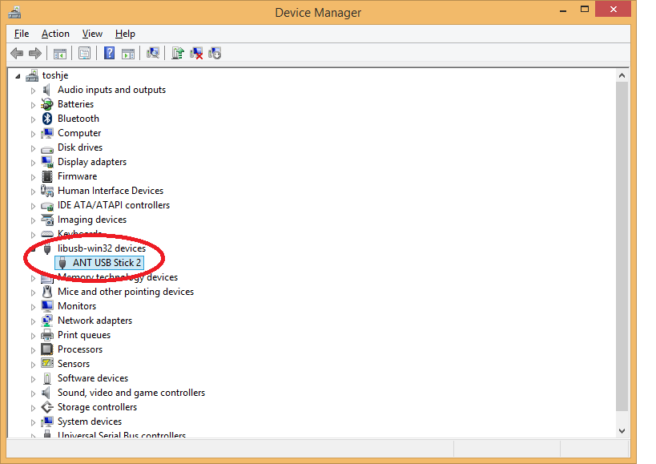
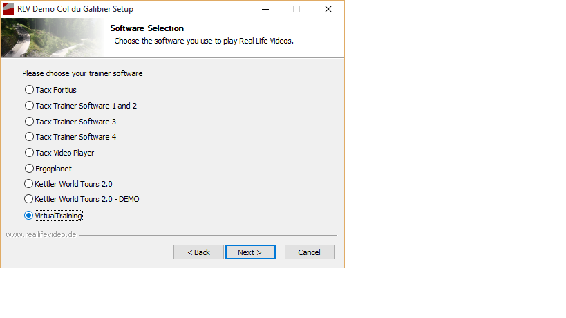
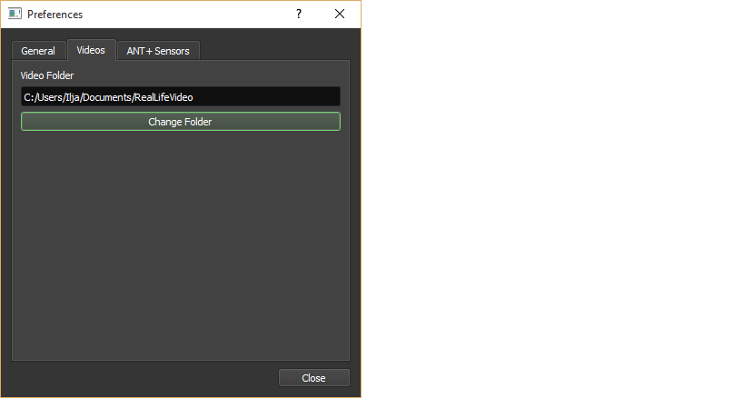
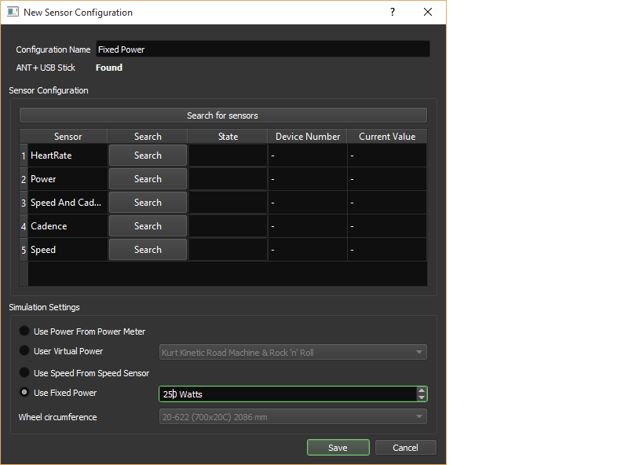
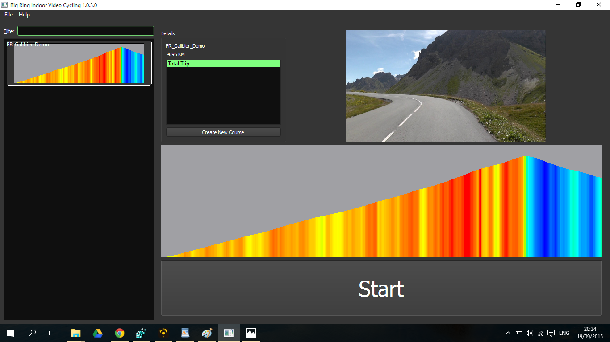
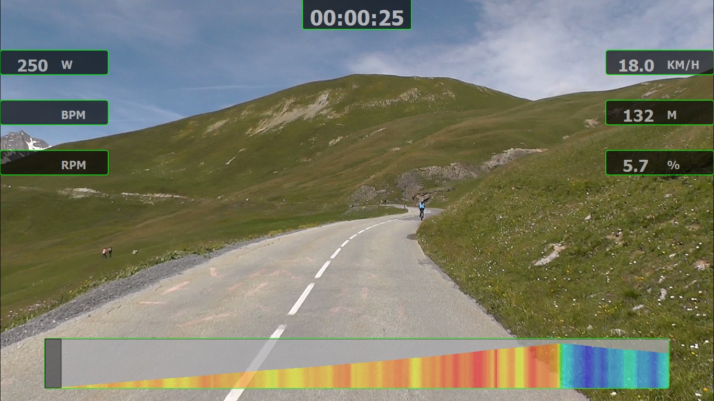

Introduction
What follows are the instructions for running Big Ring on Windows (Vista/7/8/10).Download
Please download the lastest version of Big Ring from the Download page.
Installing
Big Ring does not have to be installed. Simply extract the files from the zip-file you downloaded. Right-click on the zip-file and choose "Extract files". The resulting folder will contain all files needed for running Big Ring.
ANT+ USB Stick on Windows
To use Big Ring with ANT+ sensors, you will need to use an ANT+ USB stick (e.g. this one.). If you do not have an ANT+ stick, you can still run the program, but will be limited to using it with a fixed power input. This can still be more entertaining than staring at a blind wall during your indoor trainer ride.
If you have already used this ANT+ stick with other programs, like Zwift or Trainerroad you already have the right driver installed for this USB ANT+ stick.
To install the driver, simplly insert the stick into a USB port on your computer. After a few seconds, Windows will start to download and install the driver for your device. Wait for this to complete before continuing.
When opening
Control Panel -> Device Manager you
will see the device listed.

Installing Real Life Videos
Big Ring supports the following kinds of Real Life Videos.
- Tacx Fortius (
.rlvand.pgmffiles). - Cycleops Virtual Training (
.xmlfiles). - GPS Track files (
.gpx). This feature is experimental.
.tts are not supported (yet). Only the older
ones, with the .rlv can be used with Big Ring for the moment.
This is due to the fact that the newer Tacx Trainer Software software uses
encrypted files.
Installing Cycleops Virtual Training
The videos for Cycleops Virtual Training are normally downloaded using the Virtual Training itself. However, the videos from Reallifevideo.de also come with Virtual Training Reall Life Video files, so they can be used with Virtual Training, but also with Big Ring. To install the Virtual Training files, just use the installer, like the one that came with the demo RLV from this page and choose to install Virtual Training files.
 By default, the files will be installed intoC:\Users\USERNAME\Documents\VirtualTraining\RLV (replacing USERNAME with your own username).
If you do not use Cycleops Virtual Training, you might as well use another folder, like
C:\Users\USERNAME\Documents\RealLifeVideo\VirtualTraining
 Next, just press install and the files will be copied to right folder
Next, just press install and the files will be copied to right folder
Installing Tacx Fortius RLV
If you already have supported Real Life Videos on your computer, you can
use these. If you don't have any, but want to try out Big Ring, the easiest
way to get a video is by getting a demo video from Reallifevideo.de. On
this page
you can download a 5km demo. Run the installer and choose to install
Tacx Fortius files.
 By default all the files needed to play the video will be placed under
By default all the files needed to play the video will be placed under
C:\Program Files\TacxFortius\catalyst (on a 32 bit system) or
C:\Program Files (x86)\TacxFortius\catalyst (on 64 bit).
If you don't have any Tacx Software installed, it's perhaps easier to install
the videos in a custom place, for instance in C:\Users\USERNAME\Documents\RealLifeVideo\TacxFortius,
replacing 
Running Big Ring
You are now ready to run Big Ring Indoor Video Cycling. In the big-ring
folder, find the file named big-ring.exe and double click
on it.
C:\Users\USERNAME\Documents\RealLifeVideo Big-Ring
will import your Real Life Videos.

Next up is the sensor configuration. For now, we'll choose a simple configuration using only a fixed power configuration. Later on, if you have ANT+ sensors, you can change it to using the power or speed from your sensors. Go to the ANT+ Sensors tab and choose Create New Configuration. Give your configuration a name, for instance Fixed Power and set the power to a value of your liking in the simulation settings, for instance 250 Watts. Press Save and the configuration is stored.

On the General tab you can set your weight, which is the your weight including your bike and gear. Also you can choose to use metric or imperial units here. The default is metric. Next, close the configuration dialog.
You are now ready to run Big Ring. After having selected the video from the profiles on the left of your screen, press the start button on the lower right.  Big Ring will now start riding the video. Because a fixed power is chosen, Big Ring will calculate the speed at which the video plays by this power and the grade of the road.
Have Fun! 